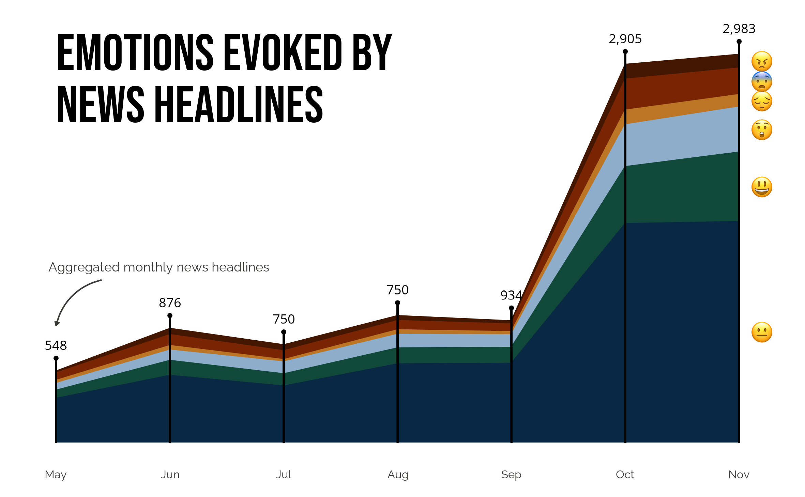

Zhaowen Guo
Home
Statistics
Data Visualization
Tutorials
Word Embeddings with R
Visualizing Survey Data with R
LinkedIn
GitHub
Email
Resume
Resume
CV
Data Visualization
Categories
All
(7)
code
(7)
spatial data
(4)
text data
(1)
tidytuesday
(1)
visualization
(7)
Order By
Default
Title
Date - Oldest
Date - Newest
Author

10 Graphs about Sentiments in AI News Coverage
code
visualization
text data
Artificial intelligence is not a substitute for human intelligence; it is a tool to amplify human creativity and ingenuity. — Fei-Fei Li
Zhaowen Guo
Apr 20, 2024
TidyTuesday Data Visualizations
code
visualization
tidytuesday
TidyTuesday is a weekly data project that encourages data enthusiasts to practice their skills in data manipulation, visualization, and analysis using R. Each week, a unique dataset is…
Zhaowen Guo
Oct 10, 2023
Visualizing Racial Justice: Moving Beyond Bar Charts
code
visualization
Gun violence disproportionately and overwhelmingly affects communities of color, resulting in significant racial disparities in exposure to gun violence. To tell stories of racial justice in gun violence, it’s crucial to use compelling visuals. While…
Zhaowen Guo
Feb 19, 2023
Mapping Green Spaces with OpenStreetMap in R
code
visualization
spatial data
OpenStreetMap (OSM) is an open-source mapping platform that provides detailed maps of the world. It is built and…
Zhaowen Guo
Feb 17, 2023
The Calendar of Gun Violence
code
visualization
spatial data
Despite being a small city, Washington, D.C. has the highest homicide rate among all U.S. states, with 226 deaths and 1330 emergency department visits due to gunshot wounds in 2021. As part of its…
Zhaowen Guo
Feb 14, 2023
Revisiting Tree Equity Gap: Hexbin or Geofacet?
code
visualization
spatial data
Last week, I introduced how to visualize disparities in tree equity scores using hexbin maps. Hexbin maps are a useful tool for visualizing dense data points by summarizing them in a compact and understandable format. By grouping data points into hexagonal bins…
Zhaowen Guo
Feb 13, 2023
Green Space for Everyone? Visualizing Tree Equity Gap
code
visualization
spatial data
Urban green spaces, such as parks, gardens, and forests, provide numerous benefits in creating livable cities. They help improve air and water quality…
Zhaowen Guo
Feb 7, 2023
No matching items